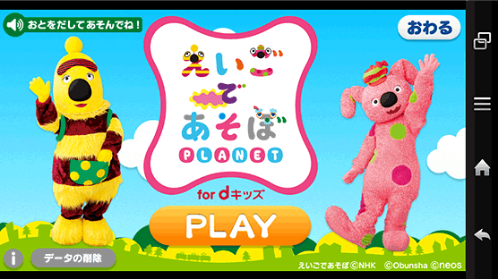
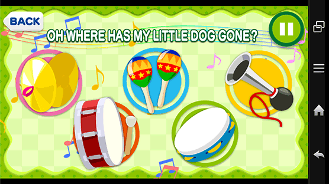
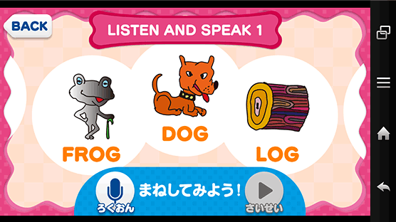

子どもの習い事をいつはじめるかは、未就学児ママが集まれば必ず出てくる話題。まわりのお友達が通い出すと、つい焦ってしまいますよね。でも「はじめたばかりなのにやめたい…と子どもにいわれた」「親の送り迎えが大変で続けられない…」なんていうお悩みも聞こえてきます。何を、いつ、どんな風にはじめたらいいのでしょうか？

子どもの習い事をいつはじめるかは、未就学児ママが集まれば必ず出てくる話題。まわりのお友達が通い出すと、つい焦ってしまいますよね。でも「はじめたばかりなのにやめたい…と子どもにいわれた」「親の送り迎えが大変で続けられない…」なんていうお悩みも聞こえてきます。何を、いつ、どんな風にはじめたらいいのでしょうか？

最近は、小学校に入る前から習い事をしている子がとても多いように感じられます。私も、できるだけ早いうちから「子どもの才能を伸ばさなきゃ」「教養を身につけさせたい」と、当時3歳位だった息子をリトミック、体操、スイミング教室などに連れて行った記憶があります。本人がヤル気ゼロだったので諦めましたが…。
実際、ビデオリサーチの調査結果「習い事をしていない子どもの割合：3～6歳」を見てみるとその割合は年々減少。62％もの子どもが就学前から習い事をしているという結果が出ています。習い事にかける費用は、月額5,000円～10,000円が3割強のボリュームゾーン。多少のお金をかけてでも、早期教育が大切だと考えるママが増えていることがわかりますね。また、就学前に人気の習い事ですが、スポーツ系では水泳が、お勉強系では、通信教育、そして英語・英会話がランクインしています（電通「習い事総合調査（こども編）」より）。英語の人気は、小学校での必修化がスタートしたり、これからのグローバル社会を生きる子どもたちに苦労させたくない、という親心からですよね。その気持ちよーくわかります。私自身、英語コンプレックスを何とかしたいと思いながらここまで来てしまったので。

出典：ビデオリサーチ「キャラクターと子供マーケット調査」

出典：ビデオリサーチ「キャラクターと子供マーケット調査」2012年6月度調査より
| 未就学男児習い事 | 2012年 | |
|---|---|---|
| 1位 | スイミングスクール | 27.1％ |
| 2位 | サッカー | 15.5％ |
| 3位 | 英会話 | 13.2％ |
| 4位 | 体操 | 12.4％ |
| 5位 | ピアノ | 6.2％ |
※体操は2012年聴取のみ
| 未就学男児習い事 | 2012年 | |
|---|---|---|
| 1位 | スイミングスクール | 22.1％ |
| 2位 | ピアノ | 19.7％ |
| 3位 | 英会話 | 11.5％ |
| 4位 | 体操 | 10.7％ |
| 5位 | バレエ | 6.6％ |
出典：ビデオリサーチ「キャラクターと子供マーケット調査」
ビデオリサーチ：http://www.videor.co.jp/solution/ad-plan/character/index.htm
習い事は一度はじめたら、頑張って続けてほしいものですが、「習い事をやめた／検討したがしなかった理由」の調査結果を見てみると、1位はお金、2位は本人がやりたくないといったから。お金については、家計への負担が大きすぎないかをあらかじめ検討することが必要です。また私の経験上、同ジャンルの習い事でも、地域の公民館や体育館で開かれている教室は比較的リーズナブルなケースが多々ありました。ただ、どんなに親が頑張っても、子どもに「やりたくない」といわれたら、お手上げですよね。はじめる前に実際に体験させてみる、いくつかの教室を見学して、雰囲気や指導者を比較する、口コミ情報を仕入れるなどして、子どもが続けられるかどうかをチェックしてあげたいですね。
| お金が かかるから |
習う時間・曜日が 合わなかったから |
親が 忙しいから |
|---|---|---|
| 51.6 | 11.5 | 14.8 |
| お金が かかるから |
習う時間・曜日が 合わなかったから |
親が 忙しいから |
|---|---|---|
| 34.0 | 26.0 | 24.0 |
| お金が
かかるから |
習う時間・曜日が
合わなかったから |
親が
忙しいから |
|---|---|---|
| 42.3 | 18.5 | 11.5 |
| お金が
かかるから |
習う時間・曜日が
合わなかったから |
親が
忙しいから |
|---|---|---|
| 37.5 | 30.6 | 20.8 |
出典：電通「習い事総合調査（こども編）」2013年9月
こどもがいる25-49歳男女対象Web調査

大きな画面で学べるタブレットでも使えちゃいます！
男女ともに人気のある習い事、英会話。やっぱり習わせてみたい！と思うママも多いと思います。でも、そもそも子どもが英語を学べるの？子どもに合っているのは英会話スクール？通信教材？そんなギモンが浮かんだら、知育アプリ「dキッズ」（月額372円で使い放題）のコンテンツ、「えいごであそぼプラネット」をお試ししてみては？英語の歌を歌ったり、ゲームを楽しんだりしながら、遊び感覚で英単語やネイティブの発音を学ぶことができます。スマートフォン・タブレット向けアプリなので、通信教材のように、ワークブックが手つかずのままたまっていったり、教材がどんどん増えて部屋に散乱……といった心配もありません。ほかにも習い事をしている、ママがお仕事をしているといった理由で時間に余裕がない場合でも、スキマ時間にサッとできるのもうれしいですね。すでに英会話教室に通っている子でも、いろいろな英語表現に触れながら、フォローアップすることができます。

番組でおなじみのキャラクターと一緒に、楽しみながら英語を学ぶことができます。
えいごであそぼ©NHK ©Obunsha ©neos

英語の歌に合わせて、画面上の楽器を奏でて遊ぶことも。リズム感も身につきそう！

ネイティブの発音を聴いて、マネできるほか、録音機能を使って自分の発音の確認もできます。
早期教育全盛のいま、いつ、何の習い事をはじめさせたらいいのか？多くのママたちが悩んでいるようです。まずは、いまがヤル気を出せる時期なのか？そして我が子が何に向いているか？好きなのか？ママがしっかり見極めてあげたいですよね。「なかなか難しい～」と思ったら、活用したいのが「dキッズ」の多様なコンテンツ。たとえば、英語・英会話をはじめる前には「えいごであそぼプラネット」、通信学習をはじめる前には、文字や数を学べるコンテンツで遊ばせてみて、勉強を続ける意志があるか見極める。リトミックを習わせる前に「おとあそび」を試してみて、音楽に興味があるかを見極める、といった方法もあります。ちなみに、うちの息子は戦隊モノが好きだったので剣道をやらせたら見事にハマり、4年間ほぼ皆勤賞です。でも、勉強を頑張らせなきゃいけないんですけど…。母の悩みは尽きませんね。

「dキッズ」は、英語をはじめ、絵本、おえかき、おとあそび、さらに国語や算数、図鑑やお仕事選びなど、幅広い年齢やニーズに応えてくれるコンテンツが充実。動画やゲームで楽しく学びながら、子どもの持つ力を伸ばすことができます。しかも月額372円で使い放題とリーズナブル。何が好きなのかをママが見極めたり、本人が集中力を身につけたり、習い事をはじめる前の下準備にも活用できます。また「dキッズ」は、1回の利用時間、閲覧できるコンテンツを保護者が設定できます。そのため、ママがちょっと手が離せないなんてときに、子どもがスマートフォンやタブレットを操作する場合もあんしん。もちろん親子でも一緒に楽しめるので、コミュニケーションにも役立てられます。
『AERA with Baby』をはじめ、ママの心身のサポートや子どもの教育関連の記事などを執筆するフリーライター。小4の男の子と小1の女の子の2児の母。